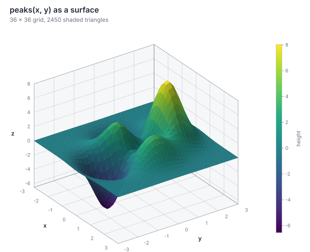
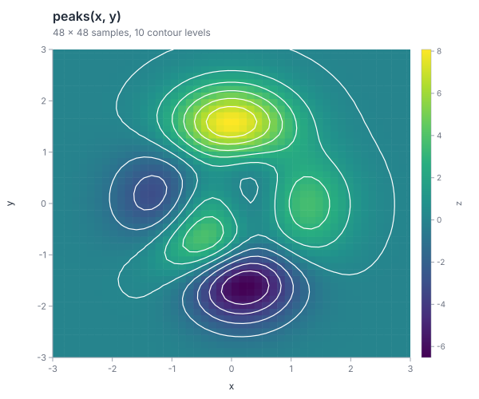
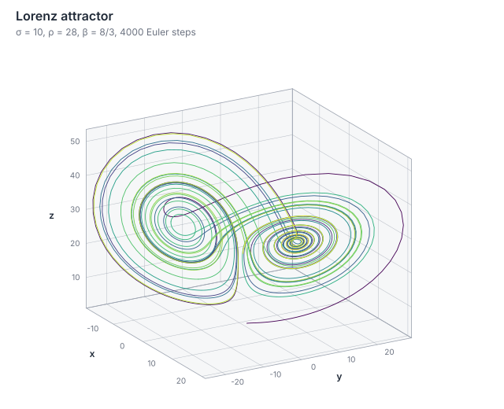

Numbers that keep their meaning
Array<T> with broadcasting, masks, @, statistics and linear algebra, next to Quantity<D> values whose dimensions are checked before execution.
A programming language in the open
Ostrin checks units, state and intent before a program runs, and compiles the same code to native C and WebAssembly. Every result on this page is computed by the real compiler.
Release status is loading…
Scientific Lab
Ten programs from the repository, running on the compiler built for WebAssembly. Each shows its source, a Run button, where the result comes from and what is not supported yet.
The Lab needs JavaScript to run the compiler. Recorded outputs are also in the Cookbook.
Visualization
std.viz is written in Ostrin: axes, legends, contours, 3D projection and shading run in the same interpreter, native binary or browser compiler as your analysis, and produce the same SVG bytes in all three.



Playground
Edit a program, check it and run it in your browser with the same compiler-backed WebAssembly playground used by the full tool.
Real Ostrin compiler · runs locally in your browser · open the full playground →
What exists today
These capabilities are in the current compiler. Each card points to the programs and tests that exercise them.
Array<T> with broadcasting, masks, @, statistics and linear algebra, next to Quantity<D> values whose dimensions are checked before execution.
A minimal DataFrame (tables), SVG charts (plot) and forward-mode derivatives (autodiff), consumed as local path dependencies with lockfiles.
spawn, join, spawn_scope, channels, select and cooperative cancellation. Deterministic by default; --native-threads uses OS threads for compiled programs.
--compile emits C and builds a native executable with --leak-check; --target wasm32-wasi builds WASI modules. A differential test compares every example with the interpreter.
A persistent language server (--lsp) for diagnostics, hover, completion, references and rename, and a debug adapter (--dap) for breakpoints and stepping. The extension ships as a local VSIX.
GPU execution, reverse-mode autodiff, networking, a public package registry and package-manager installers are not part of the current release. They stay on the roadmap until they exist.
Source → HIR → IR → C
The real output of each stage for examples/lab_pipeline.ostrin, recorded when the site was built. The program prints .
The premise
Ostrin is for software where a wrong value can be more dangerous than a wrong number. The language makes the domain visible before the program runs.
Lengths, times and derived quantities are checked before execution. A meter is not just a number with a comment beside it.
5 m + 2 s → errorValues are immutable by default. When state changes, the binding says so. Sharing and concurrency start from an explicit baseline.
mut counter = 0Option, Result and exhaustive match keep failure states in the model instead of hiding them in control flow.
try parse(input)Where to go next
Progressive steps from a first program to packages and concurrency.
ReferenceThe design documents, the language reference and the CLI.
GuidesInstall, projects, native builds, WASI, testing and the editor.
ExamplesSmall runnable programs for each part of the language.
CookbookThe Lab programs with their recorded outputs and limits.
Showcase + communityProjects built with Ostrin and how to contribute.
Follow the work